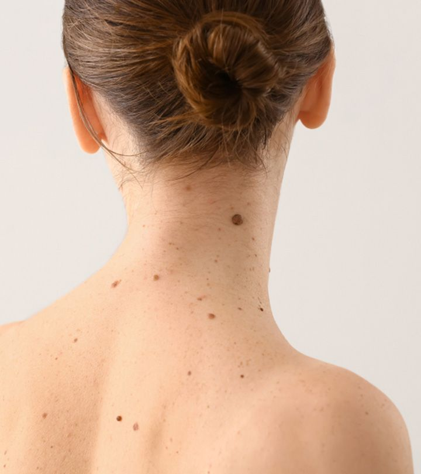
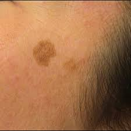
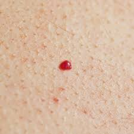
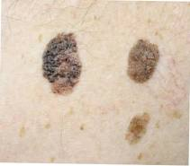
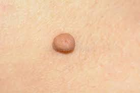
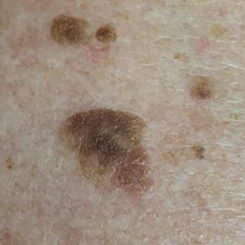
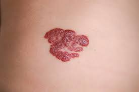
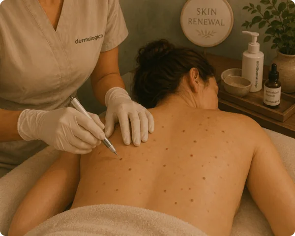

Säker och effektiv borttagning av godartade hudförändringar
Hudförändringar som leverfläckar, cherry spots (cherryangioner) och skintags (fibromer) är mycket vanliga och i de allra flesta fall helt ofarliga. De uppstår naturligt med åldern, solexponering, genetik och hormonella förändringar.
Även om de är medicinskt harmlösa kan de upplevas som kosmetiskt störande – särskilt när de sitter på synliga ställen som ansikte, hals eller dekolletage. Den goda nyheten är att de i de flesta fall enkelt kan tas bort med moderna metoder utan ärr.

Platta, bruna fläckar som uppstår i hudområden som utsatts för UV-strålning under längre tid. De orsakas av en lokal ökning av melanocyter (pigmentceller) i hudens yttersta lager, epidermis. Vanligast på ansikte, handryggar, underarmar och dekolletage hos personer över 40. Trots namnet har de inget med levern att göra – benämningen kommer från den brunaktiga färgen.

Godartade vaskulära tumörer som består av kluster av utvidgade kapillärer (små blodkärl) i dermis. De visar sig som små, runda, klarröda till mörkröda prickar mellan 1–5 mm. De blir vanligare med åldern – uppskattningsvis har över 70% av personer över 70 år minst en cherryangion. Orsaken är inte helt klarlagd men genetik och hormonella förändringar spelar roll.
Små, mjuka, skaftade utväxter av hud som hänger ut från ytan. De består av lös bindväv och blodkärl omgivna av epidermis. Uppstår oftast i områden med friktion – hudveck på hals, armhålor, under bröst och i ljumsken. Vanligare vid övervikt, diabetes typ 2 och under graviditet på grund av hormonella förändringar. Helt godartade men kan bli irriterade av kläder eller smycken.

Den vanligaste godartade hudtumören hos vuxna. Uppstår från keratinocyter i epidermis och visar sig som vaxartade, bruna till svarta upphöjningar med en karaktäristisk "påklistrad" yta. De kan vara platta eller upphöjda, ofta med synliga hornproppar (komedo-liknande öppningar). Har inget med solexponering att göra och kan uppstå var som helst på kroppen utom handflator och fotsulor.

Godartade tumörer av bindväv (fibroblaster och kollagen) som bildas i dermis eller subkutant fett. Känns som fasta eller mjuka, rörliga knutor under huden, oftast 1–3 cm stora. Kan uppstå var som helst på kroppen. Helt harmlösa men kan vara kosmetiskt störande om de sitter på synliga ställen. Skiljer sig från skintags genom att de sitter djupare och inte är skaftade.

En variant av seborroisk keratos som ofta är mörkare pigmenterad och mer upphöjd. Trots namnet orsakas de inte av virus (till skillnad från vanliga vårtor som orsakas av HPV). De uppstår genom en godartad överproduktion av keratinocyter och melanin. Vanligast på bål, ansikte och händer hos personer över 50. Kan växa långsamt över tid men blir aldrig maligna.

Godartade kärlmissbildningar som består av en onormal ansamling av blodkärl i huden. Visar sig som röda, blåröda eller lila upphöjningar som kan vara platta eller knöliga. Infantila hemangiom är vanligast hos spädbarn och växer snabbt de första månaderna, men hos vuxna kan mindre hemangiom finnas kvar eller uppstå senare i livet. De bleknar oftast inte av sig själva hos vuxna.
För upphöjda hudförändringar
Plasma-teknologi som sublimerar (förgasar) vävnaden utan att skada omgivande hud. Perfekt för skintags, upphöjda leverfläckar och fibromer som sticker ut från hudytan.
För cherry spots & ytliga kärlförändringar
Högfrekvent ström som koagulerar (stänger) de utvidgade blodkärlen i cherry spots. Direkt efter behandlingen bildas en liten skorpa som faller av av sig själv – hur snabbt varierar beroende på var på kroppen pricken sitter.
Vi tittar på dina hudförändringar och bekräftar att de är godartade. Du behöver ha fått dem bedömda av dermatolog innan.
Beroende på typ väljer vi Plaxel+ eller diatermi. Området bedövas lokalt vid behov. Vi bokar alltid 30 minuter per tillfälle och tar bort så många hudförändringar vi hinner under den tiden. Vill du ta bort fler prickar kan du boka en dubbel tid (60 minuter).
Du får tydliga instruktioner för hemvård. Huden läker normalt inom 7–14 dagar. Undvik sol på behandlat område.

Punktvis borttagning av godartade hudförändringar med plasmapen (Plaxel+).
Du vill ta bort godartade hudförändringar – fibrom (hudflikar/skin tags) eller cherry spots (små röda prickar).
Med plasmapen (Plaxel+) behandlas förändringen punktvis – en kontrollerad plasmabåge torkar och koagulerar vävnaden, som sedan bildar en liten sårskorpa och faller av under läkningen. Lokalbedövning kan användas vid behov.
Hudförändringen avlägsnas och området läker av sig självt över ca 1–2 veckor. Flera eller större förändringar kan behöva fler tillfällen.
Graviditet/amning, infektion eller irritation i området, samt oklara, förändrade eller misstänkta hudförändringar – dessa ska bedömas av läkare först (vi tar endast bort tydligt godartade, kosmetiska förändringar).
Cherry spots (cherry angiom) är små röda prickar av vidgade blodkärl. Fibrom och skin tags (hudflikar) är mjuka, godartade hudutväxter, vanliga där huden gnids – som hals, armhålor och ögonlock. Leverfläckar och födelsemärken är pigmentförändringar. De flesta är helt ofarliga, men just pigmenterade fläckar kräver mer försiktighet (se nästa flik).
De är vanliga och ökar ofta med åldern, och kan bero på ärftlighet, hormoner, friktion eller solexponering. De är i regel godartade och tas bort av kosmetiska skäl.
Bara om den är tydligt godartad. Vi behandlar enbart ofarliga, kosmetiska förändringar som cherry spots, fibrom och skin tags. Vi tar inte bort pigmenterade födelsemärken eller leverfläckar, eller något som ser avvikande ut.
Ja, om du är det minsta osäker. Vi är hudterapeuter, inte dermatologer, och kan inte avgöra om en pigmentförändring är godartad eller ett förstadium till hudcancer. En förändring som är ny, växer, har oregelbunden kant, flera färger, är asymmetrisk, kliar eller blöder ska först bedömas av läkare. Sådana fläckar tar vi inte bort.
Då avstår vi från behandling och hänvisar dig vidare till läkare eller dermatolog. Din säkerhet går alltid före kosmetik.
Godartade, ytliga förändringar avlägsnas skonsamt på kliniken med en metod anpassad efter förändringen. Behandlingen är snabb och de flesta upplever bara lätt obehag.
Håll området rent och torrt, pilla inte på sårskorpor – de ska lossna av sig själva – undvik sol och använd SPF tills huden läkt, och undvik smink direkt på området de första dygnen.
En borttagen förändring kommer oftast inte tillbaka på samma ställe, men nya kan bildas på andra ställen över tid, vilket inte går att förhindra helt.
"Extremt nöjd – professionell, kunnig, trevlig och bra resultat."
Google"Jättebra resultat! Supernöjd!"
Google"Den bästa Isabella – så duktig, trevlig och alltid så hjälpsam. Varmt rekommenderar."
Google"Noggrann och mån om mig under hela behandlingen. Tog även bort prickar på ryggen med Plasma Pen – väldigt proffsigt."
Bokadirekt"Fantastiskt bemötande. Känner mig alltid trygg och bekväm med Isabella."
Bokadirekt"Alltid lika nöjd, tack!"
BokadirektBoka en konsultation så bedömer vi dina hudförändringar och rekommenderar bästa behandlingsmetod.